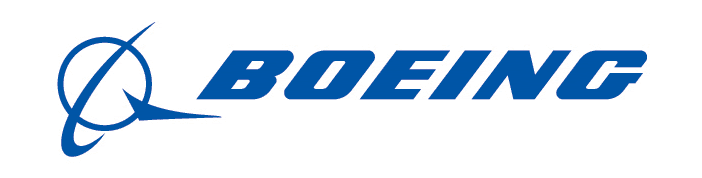
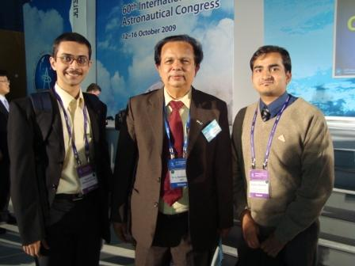
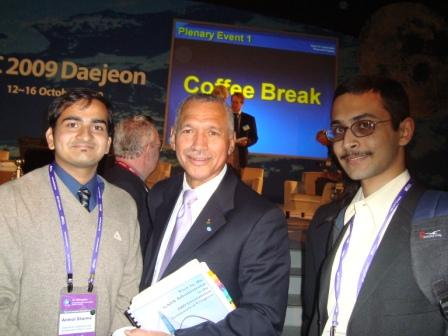
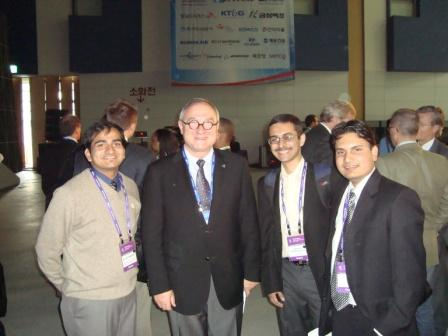
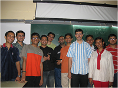
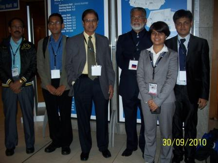
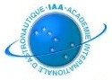

Pratham Goes Global
On 18th March 2009, Pratham received appreciation from Dr Michael Griffin, American physicist, aerospace engineer and the former Administrator of NASA. Here's an excerpt from the email he sent to us:
That's an awesome project the kids at IIT-Bombay are doing. I am most impressed. When I was in college, I was building radios -- not satellites! I wish them all the best. I don't think they need "luck". My two visits to India have left me more than a little impressed with Indian aerospace engineers.
I truly hope to visit again in some new capacity!
All the best.
Mike
 Boeing has shown immense interest in student projects going on in IIT Bombay. As a part of this initiative, Boeing has provided substantial funding for student projects. Pratham, being the frontrunner project, has received a large chunk of the funding provided to IIT Bombay. This funding has been used for procurement of components necessary for the satellite. We are thankful to Boeing for their support.
 On 7th August 2009, Dr Madhavan Nair, the then Chairman of Indian Space Research Organisation (ISRO) had visited Aerospace Department, IIT Bombay. He was presented a brief overview of the progress of the Pratham Team and the way ahead for Pratham. He was immensely impressed with Pratham's progress, and assured us of ISRO's support in our endeavours. The Memorandum of Understanding beween ISRO and IIT Bombay about the support and launch of Pratham was signed on 29th Sept 2009.
On 7th August 2009, Dr Madhavan Nair, the then Chairman of Indian Space Research Organisation (ISRO) had visited Aerospace Department, IIT Bombay. He was presented a brief overview of the progress of the Pratham Team and the way ahead for Pratham. He was immensely impressed with Pratham's progress, and assured us of ISRO's support in our endeavours. The Memorandum of Understanding beween ISRO and IIT Bombay about the support and launch of Pratham was signed on 29th Sept 2009.

Saptarshi Bandyopadhyay had the opportunity to visit the 60th International Astronautical Congress held in city of Daejeon at South Korea from 12th to 16th October. The Opening Ceremony included a welcome speech from the President of the Republic of Korea, Mr. Lee Myung-bak. Saptarshi was fortunate to meet many Heads of Space Agencies that participated in IAC 2009. To the right is Dr. G. Madhavan Nair, Chairman, Indian Space Research Organisation (ISRO), India. At the bottom left is Dr. Charles Bolden, Administrator, National Aeronautics and Space Administration (NASA), United States. At the bottom right is Dr. Jean-Jacques Dordain, Director General, European Space Agency (ESA).



Two papers about Pratham were presented at the International Astronautical Congress 2010 held in Prague from 27th Sept to 1st Oct 2010. It is a very proud moment for the student team that their work is being recognised at the international level. Five students from IITB, namely Mr. Saptarshi Bandyopadhyay, Ms. Haripriya, Mr. Jhonny Jha, Ms. Deepika Thakur and Mr. Sanyam Mulay attended the conference at Prague. The two papers are:
1. Mr. Saptarshi Bandyopadhyay, Ms. Haripriya Mukundarajan, Mr. Sanyam Mulay, Mr. Mayank Chaturvedi, Mr. Mihir Patel, Mr. Sanket Diwale, Mr. Ankit Shah, Mr. Giri Prashant Subramanian, Mr. Anirudh Subramanyam, Ms. Kanwalpreet Kaur, Ms. M. Dhanasree, Mr. Avnish Kumar, Mr. Kumara Raja Eedara, "System Engineering and Integration of Pratham, Indian Institute of Technology Bombay's first Student Satellite", Proceedings of the 61st IAC (International Astronautical Congress), Prague, Czech Republic, Sept. 27-Oct. 1, 2010, IAC-10.B4.1.8
2. Mr. Saptarshi Bandyopadhyay, Mr. Jhonny Jha, Mr. Ashish Goel, Ms. Deepika Thakur, Mr. Kartavya Neema, Mr. Manas Rachh, Mr. Nitish Reddy, Mr. Srujan Meesla, Mr. Subhasis Das, "Measurement of Total Electron Count of the Ionosphere and the Social Goal of Pratham, Indian Institute of Technology Bombay's first Student Satellite", Proceedings of the 61st IAC (International Astronautical Congress), Prague, Czech Republic, Sept. 27-Oct. 1, 2010, IAC-10.B4.2.4
 The paper on "Design of Groundstation and Polarization measurement setup and the social goal of Pratham" by Jhonny, Deepika, Kartavya, Tushar, Manas and Saptarshi has been selected for the 1st IAA Conference on University Satellites Missions and Cubesat Workshop in Roma, Italy from 24th to 29th January 2011. Manas Rachh presented the paper on our behalf.